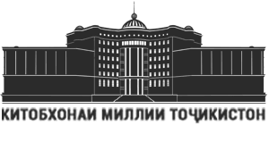

Китобхонаи миллии Тоҷикистон
Тоҷикон аз қадим фарҳанги баланди китобдорӣ ва китобхонӣ доштанд,
қаламро эҳтиром намуда, онро ҳамчун ганҷи бебаҳо ҳифз мекарданд.
Эмомали Рахмон
Асосҳо
Хабарҳо
Сохтор
Роҳбарият
Шуъбаҳо
Оиннома
Қонун
Қонун
Самтҳои фаъолияти қонун
Забони точикӣ
Фарҳанги мукаммали забони точикӣ
Маҳзани электронӣ
Феҳристи электронӣ
Толорҳои хонишӣ маҷозӣ
Сарчашмаҳои фосилавӣ
Пайвандҳои муфид
Роҳнамои хонанда
Қоидаҳои сабти ном
Толорҳои хониш
Марказҳои фарҳангӣ
Реҷаи корӣ
Суратхона
Тамос
Сохтори Китобхона
Медиатекаи Президенти Ҷумҳурии Тоҷикистон
Шуъбаи хизматрасонӣ ба муштариён
Шуъбаи котибот
Шуъбаи дастхатҳои Шарқ ва китобҳои нодир
Шуъбаи матбуоти даврӣ
Шуъбаи нигоҳдории депозитарӣ
Шуъбаи адабиёти техникӣ ва илмҳои дақиқ
Шуъбаи нигаҳдории китоб
Шуъбаи феҳристнигорӣ
Шуъбаи адабиёт доир ба фарҳанг ва ҳунар
Шуъбаи нигоҳдории рисолаҳои илмӣ
Шуъбаи таҳрир ва интишорот
Шўъбаи коркарди адабиёт
Шуъбаи илмӣ ва тадқиқотӣ
Шуъбаи маркетинг ва менеҷменти фаъолияти китобдорӣ
Шуъбаи абонементи байни китобхонаҳо ва расонидани ҳуҷҷатҳои КМТ
Шуъбаи абонементи байни китобхонаҳо ва расонидани ҳуҷҷатҳои КМТ
Шуъбаи тарғиб ва баргузории чорабиниҳои фарҳангӣ
Шуъбаи библиографияи миллӣ
Шуъбаи хизматрасонии библиографӣ
Шуъбаи такмили адабиёт
Шуъбаи робитаҳои байналмилалӣ
Шуъбаи хизматрасонии махсус (барои шахсони дорои имконияташон маҳдуд)
Шуъбаи автоматикунонии раванди китобдорӣ - иттилоотӣ
Шуъбаи адабиёти хориҷӣ
Шуъбаи муҳосибот
Маркази «Тоҷикшиносӣ»
Маркази иттилооти ҳуқуқӣ
Маркази такмили ихтисос
Маркази "Конуни забони тоҷикӣ" ва омўзиши забонҳои хориҷӣ
Шуъбаи умумӣ ва коргузорӣ
Шуъбаи кӯдакон ва наврасон